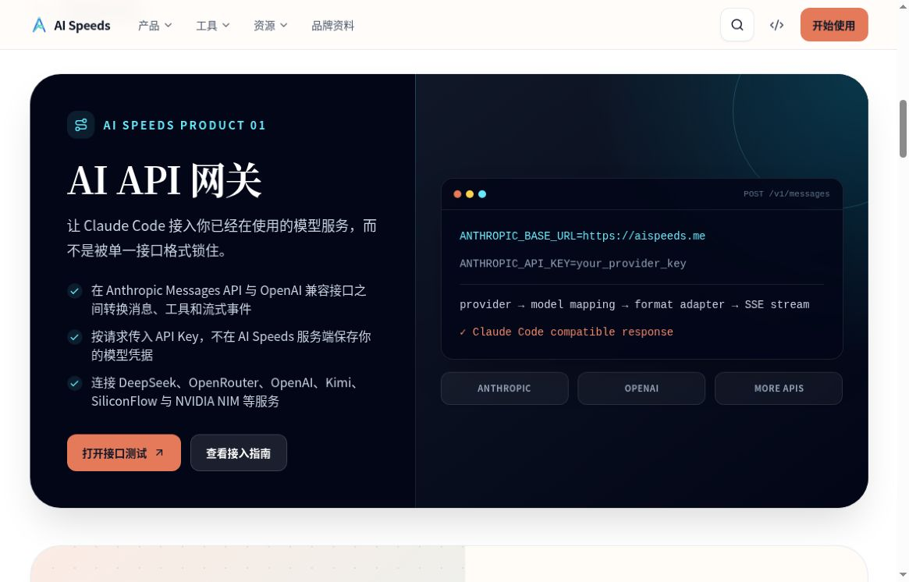

持续建设的作品集
AI Speeds产品、工具与公开实践
从模型接入、AI 工作流，到白板、录音总结与线框图。这里放着我持续构建的产品、工具和公开分享。
- AI API 网关
- cc4pm
- 公开工具与分享
独立作品集 · aispeeds.me
aispeeds.me

AI Speeds 官网 · AI API 网关产品区
晓灰 · 写代码，也写字
在真实业务中构建 Agent，也用代码拓展个人能力、研究投资判断。这里是我的作品、实践与长期思考。


SELECTED WORK / 01
持续建设的作品集
从模型接入、AI 工作流，到白板、录音总结与线框图。这里放着我持续构建的产品、工具和公开分享。
独立作品集 · aispeeds.me

AI Speeds 官网 · AI API 网关产品区